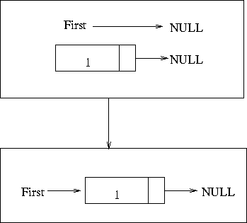
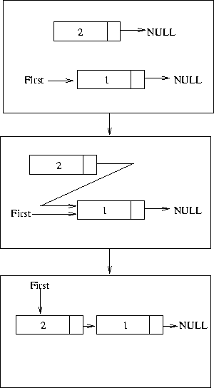

Adding a node to the front of the list
This is probably the first operation you have to be through with. Once
this is understood throughly the rest would be a pushover. Take a look
at code below this is a program that is used to add elements to the
begining of the list.
0 #include<stdio.h>
1
2 //single node is going to look like this
3 struct node{
4 int element;
5 struct node *next;
6 };
7
8 typedef struct node node;
9
10 node* addToBegining(node *first,int num){
11 node *new_node=(node *)malloc(sizeof (node));
12
13 new_node->element=num;
14 new_node->next=NULL;
15
16 //if first is null make the new node the first node
17 if(first==NULL){
18 first=new_node;
19 return first;
20 }
21
22 //else add the node to the begining of the list
23 new_node->next=first;
24 first=new_node;
25
26 return first;
27 }
28
29 void printList(node *first){
30 node *temp=first;
31
32 //traverse the list till you manage to get the NULL
33 while(temp!=NULL){
34 printf("%d\n",temp->element);
35 temp=temp->next;
36 }
37 }
38
39 int main(){
40 node *first=NULL;
41 int i=0;
42 for(i=0;i<50;i++){
43 first=addToBegining(first,i);
44 }
45 printList(first);
46 }
In the program we have 2 functions apart from main.
node* addToBegining(node *first,int num) This function actually
adds the node to the begining of the list. I won't explain the
arguments and the return types since they should be obvious.
void printList(node *first) This function prints the contents
of the list.
This program can be downloaded from here
The addToBegining Function
Here I will explain how this function works. First thing in a function
which adds anything to a link list we need to create a new node which
will be added to the list. This is done by allocating memory using the
malloc call. This call allocates a block of memory for the node. This
happens in line number 11.
Now that we have the block of memory we have to initialise it to the
necessary to the data this is done in lines 13 and 14.
The next segment of code is interesting. Here we check to see if the
first element of the list is NULL. If that is that case then we make
the first point to the newly allocated node. The image below shows the
same in a pictorial form.

If First is not NULL, then the pointer from the new node is made to
point to the node which is pointed to by first. Once this is
done. First is made to point to the new node and is returned as a
result we have new element attached to the start of the list. This is
shown pictorially below

As a warning don't mix up Line 23 and 24. The reason is that if
you first point the "first" pointer to the new node you will lose the
address of the next node. Ergo, you will have nowhere to point the new
node to.
the printList() Function
This is the most standard way you would be traversing any linked
list. So make sure you understand this well. We make a temporary
pointer point to the first element of the list. In the while loop we
check to see if the temporary pointer has become NULL. If it has not
we continue. In the loop we print the number in the node. The next
statement is again interesting. Here we actually do the
traversing. The temporary pointer is made to point to the node pointed
by the "next" field of the node. As a result the temporary pointer
moves to the next node. This goes on till the "temp" pointer hits NULL.
Try solving this...
Now you write a program to read in names and numbers of 5 people and
attach them to the front of a linklist.
Try your best to solve the problem above. Only as the last resort use
this solution. If you have a
segmentation fault problem you can see how to debug it here